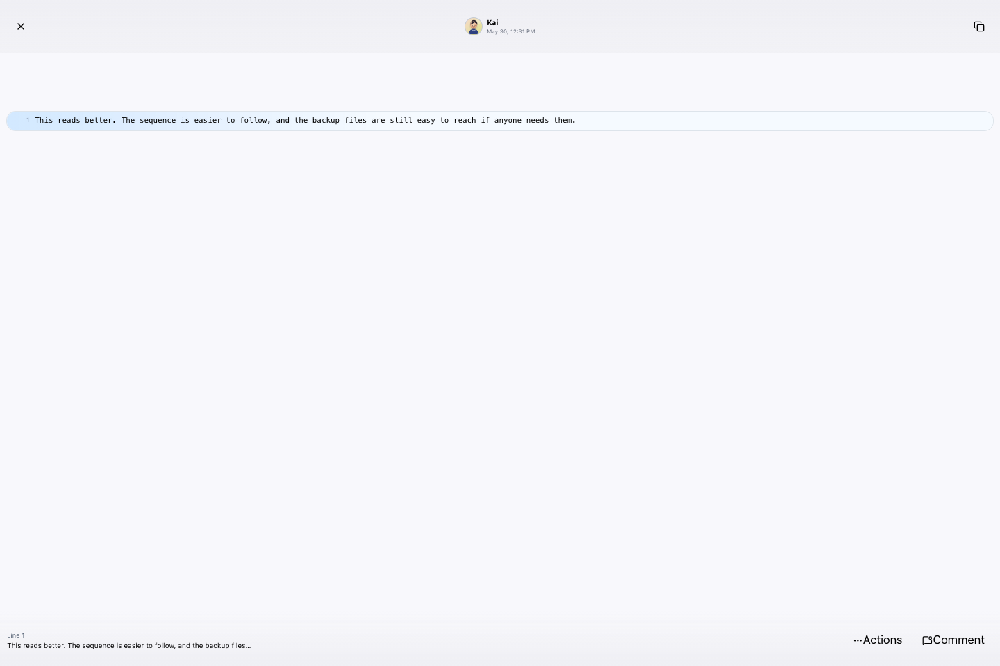
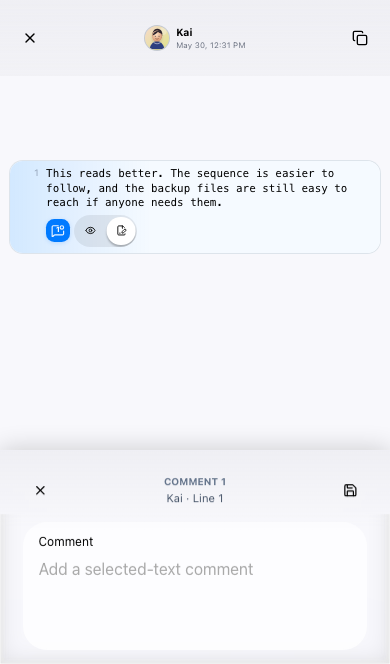
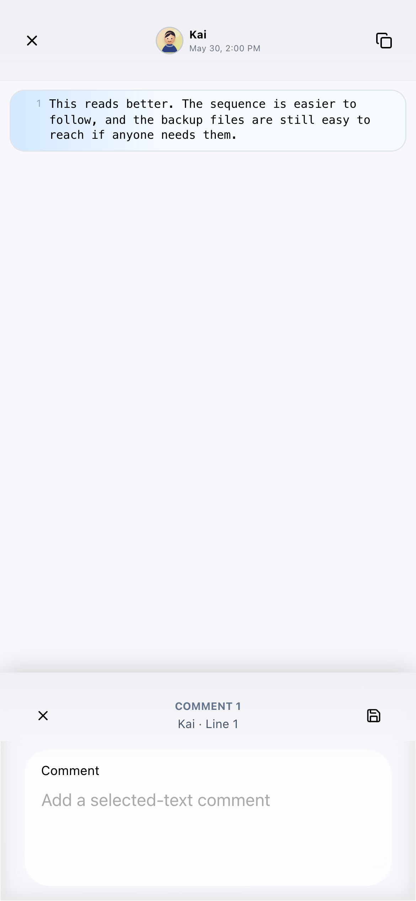

Web Chat Message Comment Polish Review
结论：实现与原始目标基本对齐，等待用户视觉验收后再 archive。
本轮修复 sender/avatar projection、comment resource 空值规则、comment icon/action 语义，以及 Framework7 PageContent padding 所有权。Round 2 追加修复：消除 source popup 双重 page-content、dense toolbar 改成 icon-only、空评论保存自动删除。
关键截图








CSS 证据摘要
桌面和 iPhone 14 的 measurement JSON 都显示 `visibleText = no-placeholder`，且 comment editor `PageContent` 通过 `--f7-page-toolbar-top-offset` 和 `--f7-page-content-extra-padding-*` 合成 padding。
{
"desktop": {
"textareaRect": "x=564 y=846 width=313 height=100 bottom=946 / viewportHeight=960",
"pageContentPadding": "top=72.32px bottom=13.76px",
"vars": "toolbarTop=64px extraTop=0.52rem extraBottom=0.86rem"
},
"iphone14": {
"textareaRect": "x=39 y=550 width=313 height=100 bottom=650 / viewportHeight=664",
"pageContentPadding": "top=72.32px bottom=13.76px",
"vars": "toolbarTop=64px extraTop=0.52rem extraBottom=0.86rem"
}
}
Round 2 DOM 证据来自 round2-iphone14-source-popup-contract.json：
{
"nestedSourcePageContent": false,
"ancestorPageContentCount": 1,
"sourceContentParentClass": "message-source-page page no-swipeback page-current",
"toolbarVisibleText": "",
"buttons": [
{ "text": "", "ariaLabel": "Open source line actions", "title": "Actions" },
{ "text": "", "ariaLabel": "Comment on selected source line", "title": "Comment" }
],
"emptyCommentDeletion": "anchor count 0 -> 1 -> 0"
}
偏移清单
- 流程偏移：产品代码在本上下文开始前已存在为未提交改动；本轮重新验证并记录偏移。
- 证据偏移：用户当前 Studio 房间为空，所以完整行为证据来自当前 worktree 的 stable example harness。
- 操作偏移：移动端一次 agent-browser click 被 overlay 拦截，后续用同一元素的真实 DOM click 触发。
- 范围偏移：没有删除所有 safe-area 用法，只处理 Framework7-owned PageContent/toolbar 冲突点。
- 验证偏移：没有跑完整 Storybook DOM 套件。
- 工作区偏移：无关 `bun.lock` dirty 未提交。
- Round 2 验证偏移：第一次 Playwright 从仓库根运行找不到 `playwright`，改从 `packages/web-chat-view` 执行后通过。
- Round 2 验证偏移：最初使用 `[part="message-bubble"]` 等待失败，修正为 token selector `[part~="message-bubble"]` 后通过。
未来任务
- 做 remaining safe-area usage audit，区分 inner-shell spacing 和 Framework7-owned surface。
- 补 Storybook DOM contract 覆盖 source comment roundtrip。
- 如需非空评论删除能力，新增 destructive icon action，并在有内容时弹确认框。
- 把 actor presentation projection 沉淀为更长期的 app-server/message-system contract。
- 抽 shared avatar primitive，进一步统一 Studio/Auth/Web Chat 头像。
- 用户验收后 archive 当前 OpenSpec change。